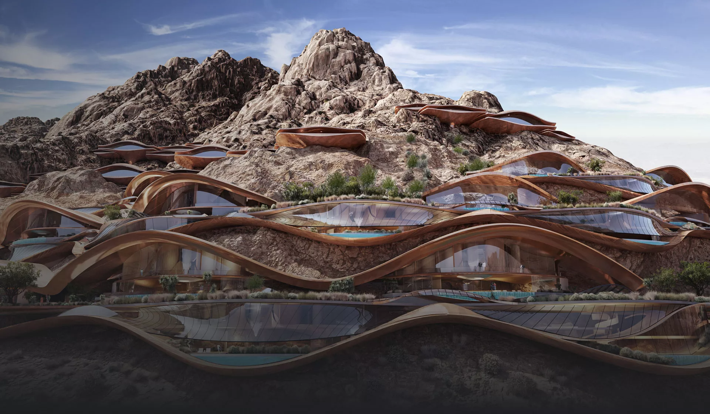
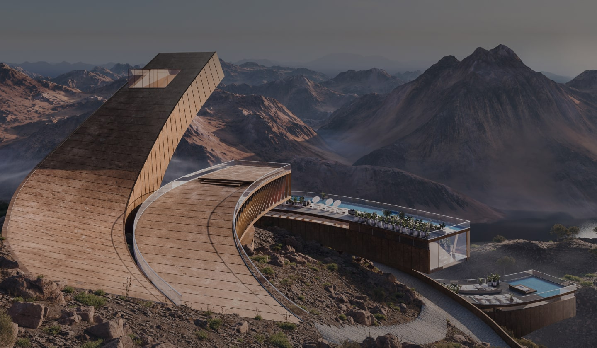
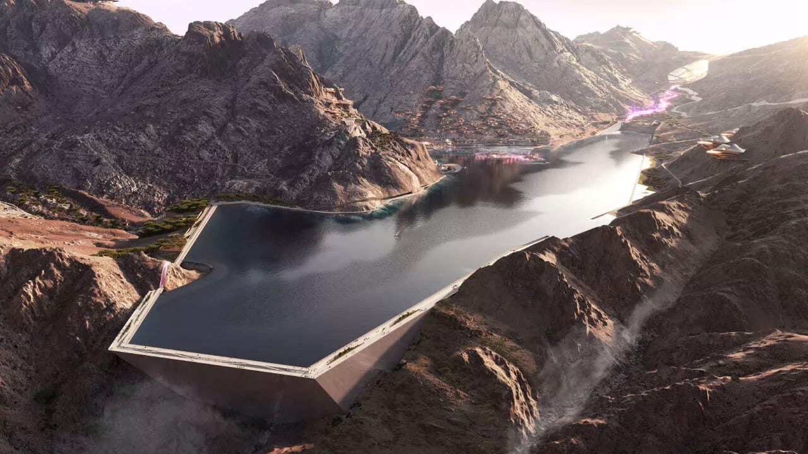
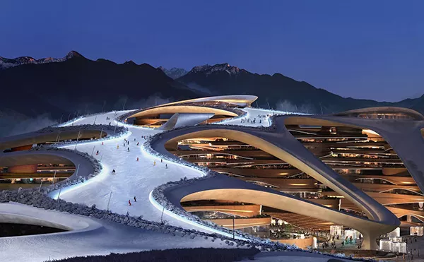
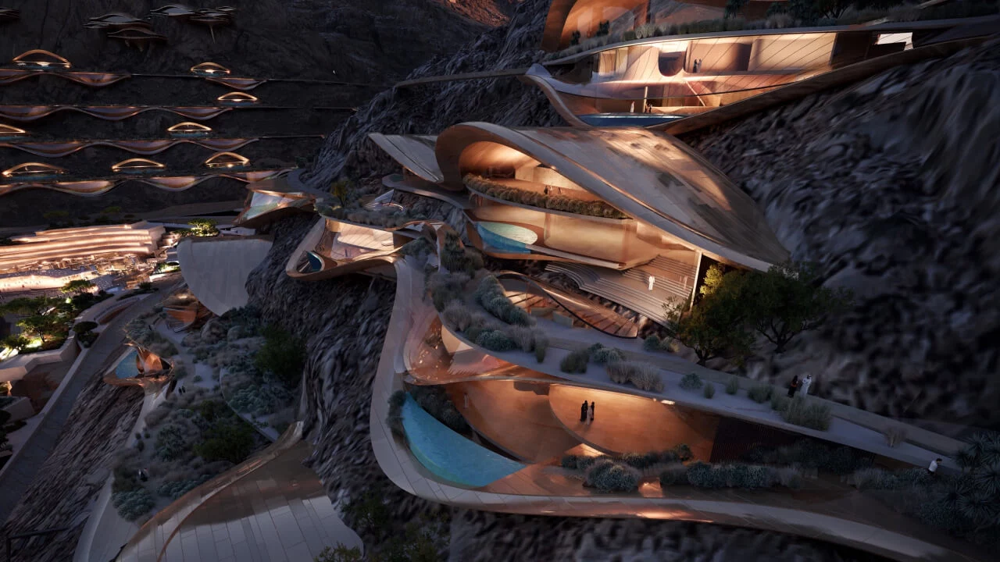
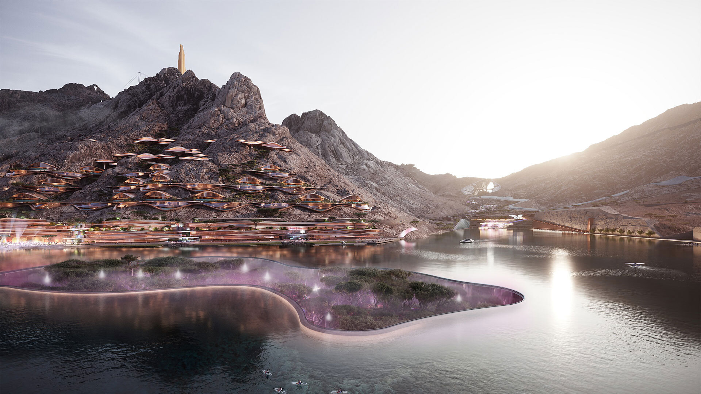
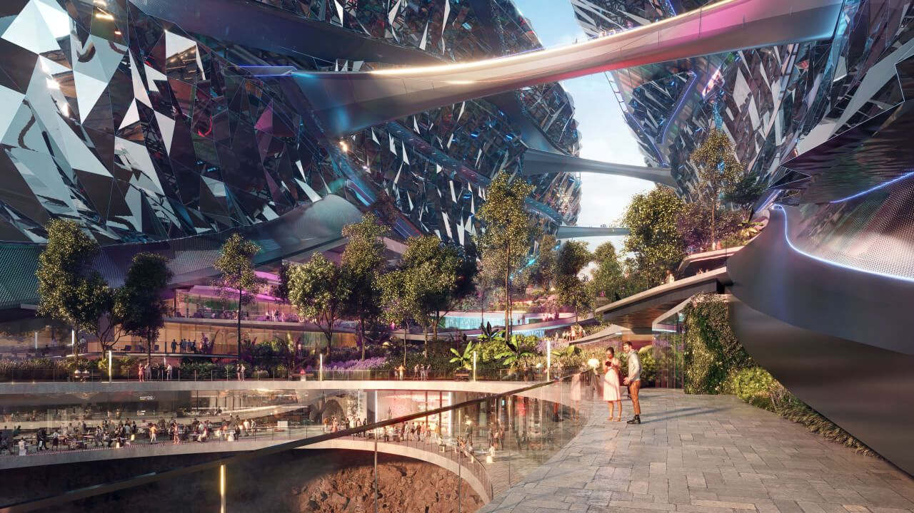
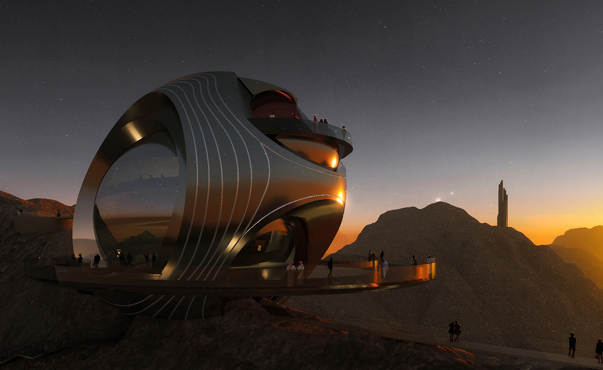
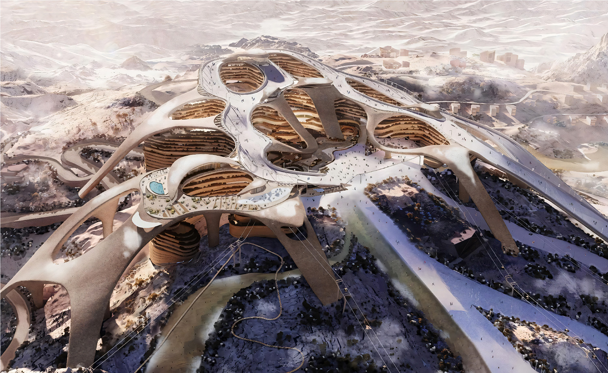

أعجوبة الطبيعة والابتكار
تروجينا هي الوجهة الجبلية الأولى من نوعها في قلب نيوم، حيث تندمج القمم الشاهقة مع التقنيات المستقبلية لترسم ملامح عصر جديد للسياحة العالمية المستدامة.

تروجينا هي الوجهة الجبلية الأولى من نوعها في قلب نيوم، حيث تندمج القمم الشاهقة مع التقنيات المستقبلية لترسم ملامح عصر جديد للسياحة العالمية المستدامة.

ما بين الرمال الذهبية والقمم التي تعانق السحاب، تتميز تروجينا بمناخ فريد وتنوع بيولوجي محمي، يجعل من كل زاوية فيها لوحة طبيعية لم تمسها يد العبث.

تكسو الثلوج الطبيعية قمم تروجينا في فصل الشتاء، لتقدم مشهداً نادراً في قلب شبه الجزيرة العربية، وتخلق أجواءً ساحرة تجمع بين دفء الكرم وبرودة المرتفعات.

استعد لتجربة تزلج عالمية لا تُنسى. من المنحدرات الجليدية المفتوحة إلى الرياضات الشتوية المتنوعة، تروجينا هي الملاذ الأول لعشاق الأدرينالين تحت سماء زرقاء صافية.

عندما تشتد حرارة الصيف، تظل تروجينا واحة باردة ومنعشة. استمتع بمسارات المشي الجبلي، ركوب الدراجات، وتسلق الصخور وسط هواء نقي وأجواء معتدلة طوال العام.

"ذا فولت" (The Vault) ليست مجرد مبنى، بل هي قرية عمودية مطوية تندمج في حضن الجبل. تصميم هندسي يتحدى الجاذبية ليجمع بين الرفاهية المطلقة وحماية البيئة المحيطة.

تتربع البحيرة العذبة في مركز المشروع كمرآة تعكس جمال القمم. مركز للرياضات المائية والاسترخاء، ومساحة تلتقي فيها الطبيعة مع الإبداع البشري في أبهى صوره.

من الألعاب الآسيوية الشتوية إلى المهرجانات الفنية الكبرى، تروجينا هي المسرح الجديد لاستضافة أضخم الفعاليات العالمية، مما يجعلها وجهة تنبض بالحياة في كل موسم.

تروجينا هي تجسيد لرؤية السعودية 2030؛ مشروع طموح يعتمد على الطاقة المتجددة بنسبة 100% ليثبت للعالم أن التقدم البشري يمكن أن يسير جنباً إلى جنب مع حماية كوكبنا.